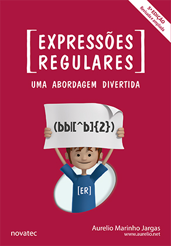
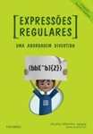
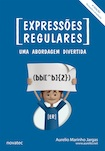
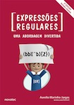
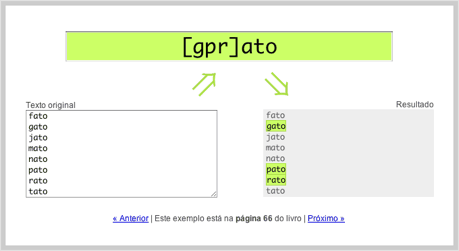
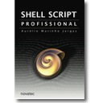

|  |
Ficha
| Título: | Expressões Regulares - Uma abordagem divertida |
| Autor: | Aurelio Marinho Jargas (site, blog, twitter) |
| Editora: | Novatec |
| Edição: | 5ª |
| Ano: | 2016 |
| Páginas: | 248 |
| Formato: | 16×23 cm |
| Idioma: | Português |
| ISBN: | 978-85-7522-474-8 |
| Lançamento: | 15 de fevereiro de 2016 |
| Preço: |
R$ 59,00 (impresso) R$ 47,20 (e-book) onde comprar |
| Testemunhos: | Leia a opinião de quem já comprou as edições anteriores |
Resenha

As Expressões Regulares podem ser utilizadas em editores de texto, planilhas, bancos de dados e linguagens de programação, em sistemas Unix, Linux, Windows e Mac. Qualquer usuário de computador pode usufruir dos seus benefícios. Profissionais que manipulam texto e dados economizarão horas de serviço braçal: escritores, revisores, tradutores, programadores e administradores de sistema.
Em uma abordagem incomum de encontrar em livros técnicos, as explicações didáticas e divertidas tornam prazerosa a leitura de um tema tão árido e abstrato. É uma conversa entre amigos, partindo do básico até chegar aos conceitos avançados. Esta obra revela aos poucos o poder das expressões e o leitor irá saborear o assunto descobrindo seus segredos descontraidamente.
Esta 5ª edição, além de correções e atualizações, traz tópicos novos que ensinam como utilizar as expressões regulares em duas ferramentas importantes para usuários de Windows: o enxuto editor de textos Notepad++, e a poderosa shell PowerShell, sendo que esta ganhou um guia completo, bem detalhado, com 12 páginas recheadas de exemplos. Já usuários de sistemas Unix vão gostar do novo tópico sobre o servidor web Nginx, que explica como usar as expressões em suas diretivas de configuração.
Saiba mais em www.piazinho.com.br.
Download (PDF)
- Sumário
- A lista completa dos tópicos abordados no livro.
- Capítulo 1 (completo) e Capítulo 2 (parcial)
- Baixe o trecho inicial do livro, para você experimentar a leitura fácil e divertida, que ensina expressões regulares de maneira indolor. Saboreie, aproveite. Mas cuidado: depois de começar, será difícil parar :)
- Capítulo 8 – Linguagens de programação: Awk
- O Capítulo 8 do livro é direcionado a programadores. É um guia que ensina como usar as expressões regulares para fazer casamentos (MATCH), substituições (REPLACE) e divisões (SPLIT) em várias linguagens de programação. Além de ensinar, este guia também dá exemplos com códigos prontos para usar, assim você pode testá-los em sua própria máquina. Quer ver como é? Baixe esta amostra, sobre a linguagem Awk.
- Apêndice B – Tabelas
- No final do livro, há um apêndice com várias tabelas, que resumem vários conceitos ensinados no livro. É um guia de consulta rápida (cheat sheet), muito útil para aqueles momentos de dúvida na hora de usar as expressões. Preparei esta versão especial em PDF, juntando todas as tabelas em uma única página A4. Boa para imprimir e/ou salvar em seu smartphone. Aproveite!
Novidades da 5ª edição
- Nginx (novo)
-
O Nginx é um servidor web rápido e eficiente, uma alternativa popular ao Apache que já se tornou o terceiro mais usado no mundo.
Vai utilizá-lo? Então é importante saber bem os vários detalhes sobre a aplicação das expressões nele, pois ao todo 13 diretivas de configuração do Nginx usam expressões regulares.
Neste tópico novo do livro, tudo é explicado de maneira didática, para que você possa aprender e já aplicar em seus sites. Há diversos exemplos de uso das diretivas
location,iferewrite, além de explicações sobre grupos nomeados, expressões negadas, uso de aspas, redirecionamento, casamento parcial e outros detalhes preciosos. - PowerShell (novo)
-
Minha especialidade é a shell do Unix, mas sabe que eu gostei de ter estudado e experimentado a PowerShell do Windows?
Muito diferente do antigo MS-DOS, traz ideias do Unix, mistura com objetos e suporta expressões regulares diretamente via operadores como
-Match,-Replacee-Split. O motor por baixo de tudo é a plataforma .NET, então o suporte às expressões é bem completo e poderoso. Acabei me empolgando e fazendo um guia completo, bem detalhado, com 12 páginas (versão impressa) recheadas de exemplos e explicações didáticas sobre como casar, extrair, substituir e dividir textos na linha de comando do PowerShell. - Notepad++ (novo)
-
O Notepad++ é um editor de textos poderoso, popular entre programadores e usuários avançados no Windows.
Usando PCRE, ele traz um suporte completo às expressões, com as tradicionais ferramentas de busca e substituição, além de poder destacar textos (tipo um RegexPal embutido).
Este tópico ensina como utilizar as expressões no editor, e explica vários detalhes importantes como acentuação, maiúsculas/minúsculas, caracteres especiais, opções, retrovisores, escapes, entre outros. Tem também uma explicação sobre o metacaractere exótico
[=x=], usado para resolver problemas com acentação. - FINALMENTE: Versão digital (e-book)
- Muito pediram, durante muito tempo, e finalmente em 2016 o piazinho entra na era digital. Além do livro impresso, agora também está disponível no formato eletrônico (e-book). Este é o primeiro lançamento digital da Novatec Editora (piazinho pioneiro!). Visite suas lojas de e-book preferidas (Amazon, Google, Apple) para ter o "e-piazinho" em seus dispositivos e poder aprender expressões regulares em qualquer lugar.
Comparativo

|

|
 |  |  | |
|---|---|---|---|---|---|
| 1ª edição | 2ª edição | 3ª edição | 4ª edição | 5ª edição | |
| Ano: | 2006 | 2008 | 2009 | 2012 | 2016 |
| Páginas: | 144 | 168 | 208 | 224 | 248 |
| Formato: | 14×21 cm | 16×23 cm | 16×23 cm | 16×23 cm | 16×23 cm |
| Editores: |
Emacs Vim Word OpenOffice |
Emacs Vim Word OpenOffice |
Emacs Vim Word OpenOffice Google Docs |
Emacs Vim Word OpenOffice |
Emacs Vim Word OpenOffice Notepad++ |
| Planilhas: | - | - | - |
Google Docs OpenOffice |
Google Docs OpenOffice |
| Aplicativos: | - | Grep | Grep |
Grep Apache HTTPd Find |
Grep Apache HTTPd Find Nginx |
| Databases: | - |
MySQL PostgreSQL |
MySQL PostgreSQL Oracle SQLite |
MySQL PostgreSQL Oracle SQLite |
MySQL PostgreSQL Oracle SQLite |
| Linguagens: |
Awk JavaScript Perl PHP Python Sed Tcl VBscript C Java Ruby |
Awk JavaScript Perl PHP Python Sed Tcl VBscript C Java Ruby ActionScript PHP PCRE Shell Script |
Awk JavaScript Perl PHP Python Sed Tcl VBscript C Java Ruby ActionScript PHP PCRE Shell Script HTML5 Lua .NET (VB, C#) |
Awk JavaScript Perl PHP Python Sed Tcl VBscript C Java Ruby ActionScript PHP PCRE Shell Script HTML5 Lua .NET (VB, C#) |
Awk JavaScript Perl PHP Python Sed Tcl VBscript C Java Ruby ActionScript PHP PCRE Shell Script HTML5 Lua .NET (VB, C#) PowerShell |
Onde comprar?
Versão digital (e-book):
- Amazon (Kindle)
- Livraria Cultura (kobo)
- Apple iBooks (em breve)
- Google Play Books (em breve)
Versão impressa:
Se ainda estiver em dúvida se compra ou não, veja a opinião de quem já comprou, ou fale comigo.
Exemplos interativos
Que tal ir testando os exemplos do livro durante a leitura?
|  |
| Clique aqui para usar os exemplos interativos |
Esta ferramenta, criada especialmente para o livro, interpreta expressões regulares em tempo real e mostra na tela o resultado. Ela possui cadastrados todos os exemplos do livro, juntamente com o número da página em que eles se encontram (versão impressa). Assim, o leitor pode testar cada exemplo, fazer variações, mudar a expressão, experimentar textos diferentes, enfim, fixar o aprendizado na prática.
Vídeos — Tutoriais
Fiz alguns vídeos no YouTube para complementar os ensinamentos do livro. Aproveite!
Expressões Regulares - Quantificadores Gulosos (8 minutos)
Este vídeo demonstra o que está explicado no Capítulo 3, tópicos “Quantificadores gulosos” e “Quantificadores não-gulosos”, páginas 62-66.
No vídeo eu mostro o que acontece quando um metacaractere é guloso (casa tudo o que puder), quando ele é não-guloso (casa o mínimo possível) e quando ambos são forçados a ceder para validar a expressão.
| Metacaracteres gulosos: | * | + | ? | {n,m} |
| Metacaracteres não-gulosos: | *? | +? | ?? | {n,m}? |
Como extrair e formatar texto usando Expressões Regulares (14 minutos)
Este vídeo demonstra como usar Expressões Regulares para extrair informações de um texto e depois reorganizar no formato que você quiser. São três passos distintos:
- Casar o trecho de texto (match)
- Marcar as informações desejadas (group)
- Formatar o texto (replace)
Sempre faça os três passos sequencialmente, ou seja, não se preocupe com a formatação se você ainda não terminou a expressão que casa o texto. Tampouco saia colocando grupos desnecessários antes de concluir o passo 1. Assim, focando em uma tarefa por vez, sua vida com as expressões fica mais tranquila.
A descrição do vídeo lá no YouTube traz mais informações sobre as ferramentas e expressões utilizadas.
Bastidores
Eu gosto de compartilhar os bastidores dos trabalhos que faço, para quem está na escuta saber como funcionam as coisas, e, quem sabe, se animar a produzir também. Com os livros não é diferente.
Durante a escrita do desta nova edição livro, tagarelei muito no twitter ao mesmo tempo que escrevia, compartilhando em tempo real as aventuras da rotina de escritor :)
Veja também
|  |
Shell Script Profissional Este é meu outro livro, escrito com o mesmo estilo descontraído e didático. Enorme, com quase 500 páginas, desvenda os segredos do Shell Script de maneira indolor. Aprovado e recomendado pelos leitores. |